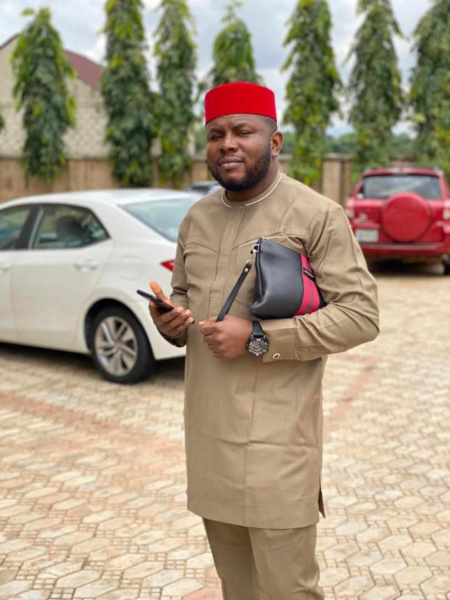
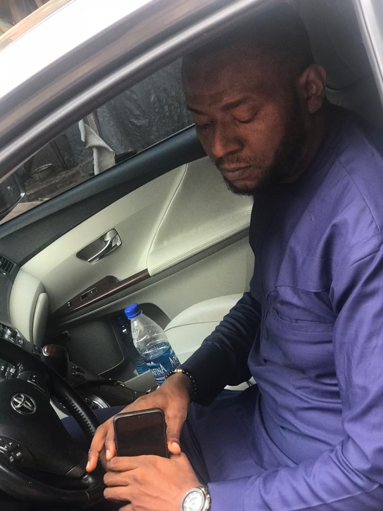
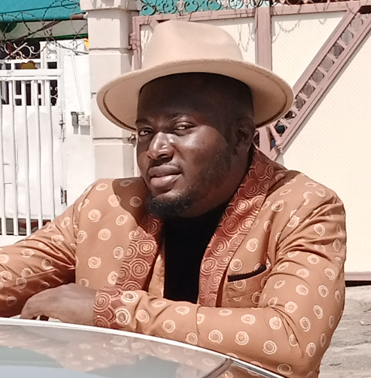

Mr. Obinna Okoye is
the First born of the Okoye family.
He was born in 15th June 1988. He is
popularly known as (Obiten-ten).

Mr. Ebuka Okoye is
the Second born of the Okoye family.
He was born on 20th November 1989. He is
popularly known as (Ruff). A very Big Guy
Ifeadigo nke Izizi na Ifitedunu.

Mr. Kosisochukwu Okoye is
the Third born of the Okoye family.
He was born on 21st April 1991. He is
popularly known as (Engineer).
Pilot One not literally though...lolz

Mr. Obumneme Okoye is
the Fourth born of the Okoye family.
He was born on 24th November 1995. He is
popularly known as (OBUMBIG).
Obele nwa nekwe efi onu...lolz
Mr. Onyeka Okoye.
was born on 28th January 1998. He is
popularly known as (STEVE-MEDIA). He is
the Fifth born of the Okoye family.
Miss. Chinaza Ekpere Adaoma Okoye.
The fairest of them all, she
was born on 9th August 2000. She is
popularly known as Miss Ra... My eyes who slapped me..lolz She is
the last born of the Okoye family and the only daughter.